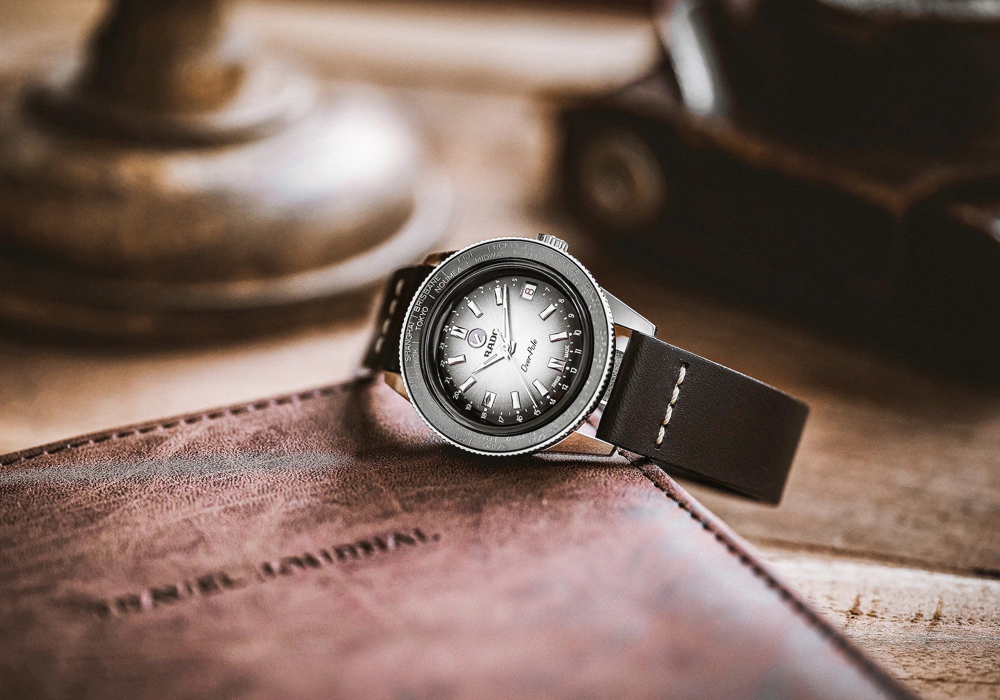
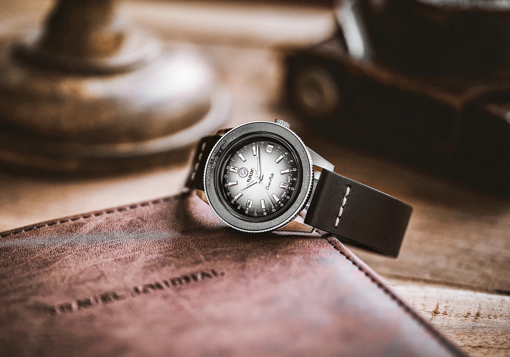
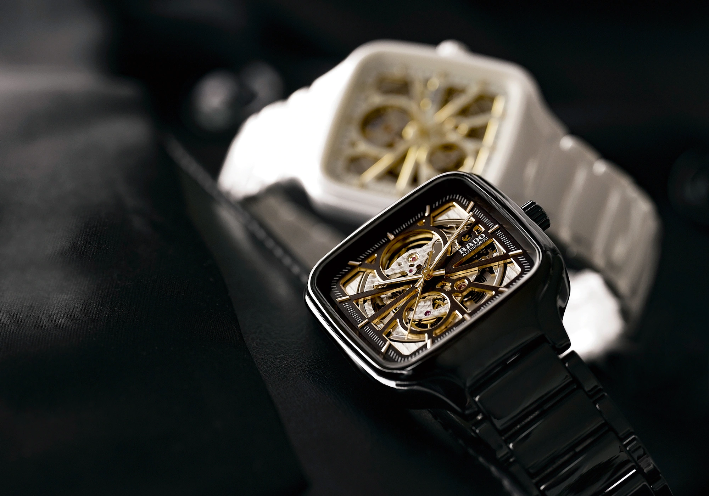
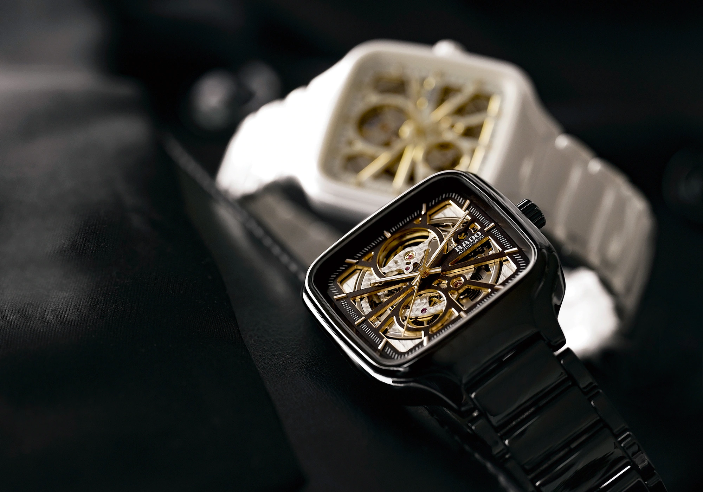
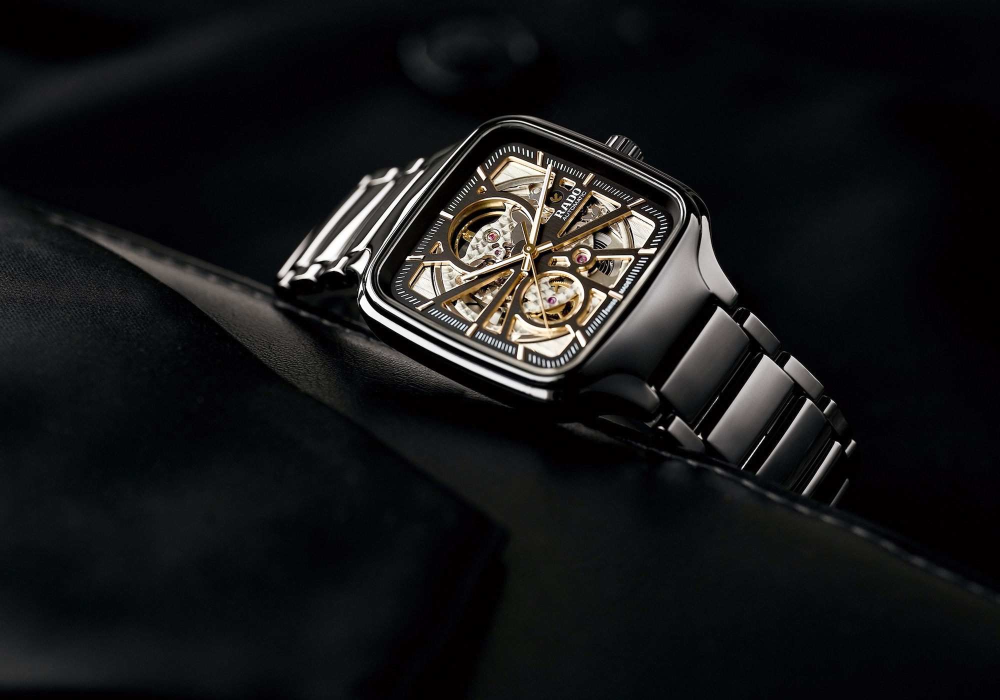
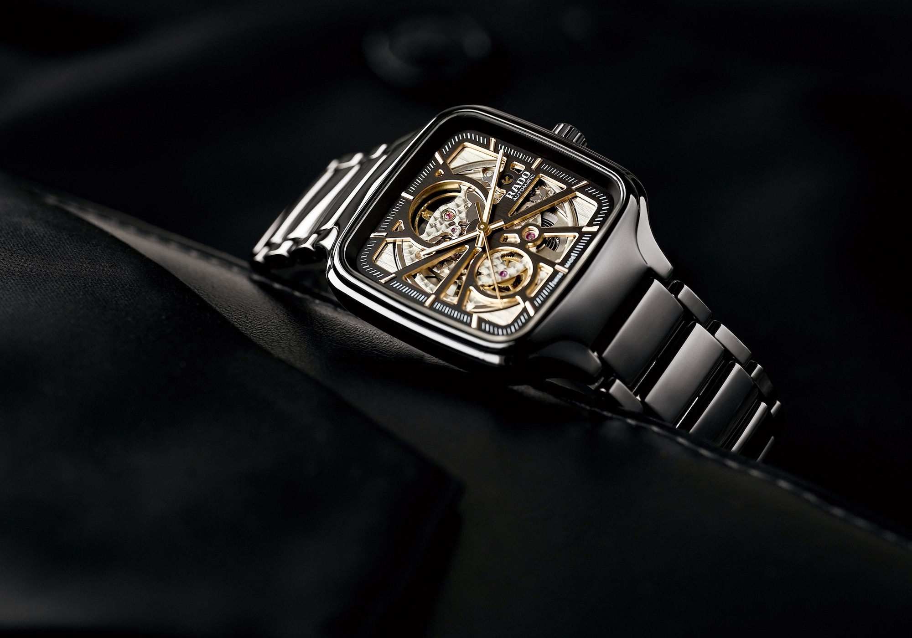

- Men
- Women
- Ceramic Watches
- Feel Rado

Rado is known as the Master of Materials: from high-tech ceramic to sapphire crystal and
diamonds to stainless steel, our innovative watches have no boundaries when it comes
to design. Feel and discover the Rado difference!
 

 


 


The new Captain Cook High-Tech Ceramic Diver comes in six models, each one
with a distinct character, to match the most discerning
tastes of true watch lovers.
 Captain Cook High-Tech
Captain Cook High-Tech R32129152
 Captain Cook High-Tech
Captain Cook High-Tech R32144202
 Captain Cook High-Tech
Captain Cook High-Tech R32129152
 Captain Cook High-Tech
Captain Cook High-Tech R32129152
 Captain Cook High-Tech
Captain Cook High-Tech R32129152